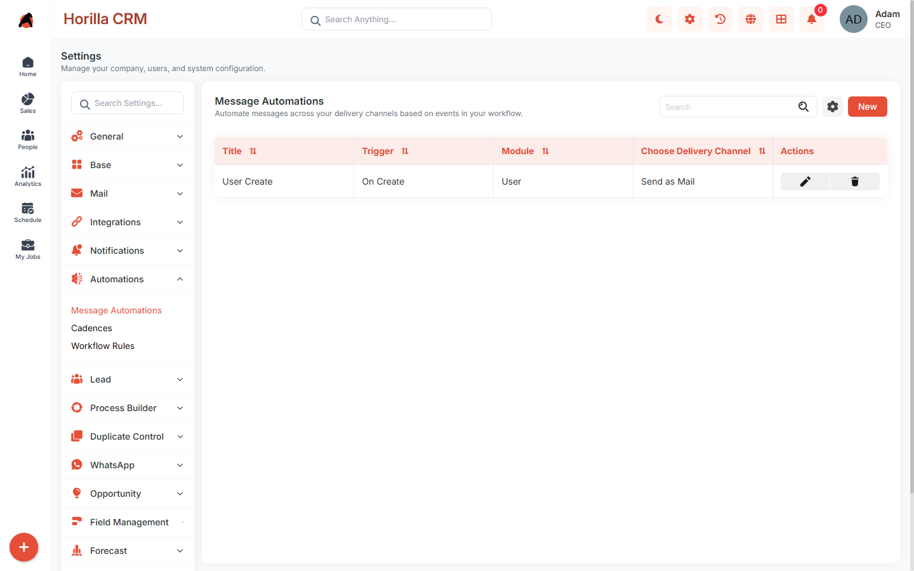
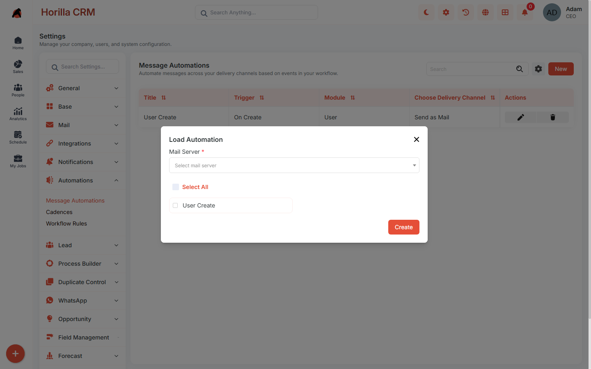
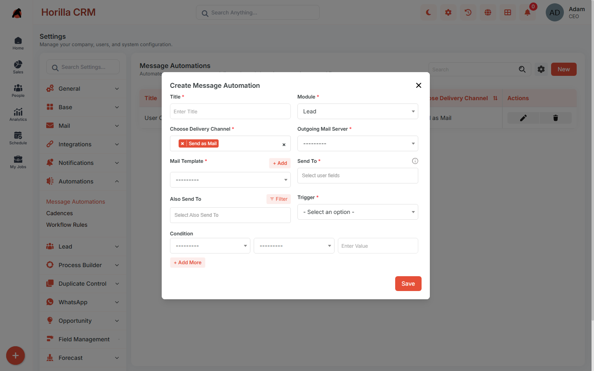

Introduction
Message Automations send a message when something happens to a record, or at a time calculated
from a date on that record. Open Settings → Automations → Message
Automations. The page title is Message Automations, and the
description under it reads: Automate messages across your delivery channels based on events
in your workflow.
Key Features and Functionalities
1. Message Automations List
Purpose: see every message automation for the active company.
- Each row shows Title, Trigger, Module, Choose Delivery Channel, and Actions.
- The search box filters the list by title.
- New opens the create form.
- The gear menu beside New includes Load Automation and Add Column to List.
-
When the list is empty, the page shows
Nothing to show yet. Please add your Message Automations.
and a Load Automation button.

2. Load Automation
Purpose: import a prebuilt rule that uses an outgoing mail server already saved under Mail.
- Open the gear menu and choose Load Automation. On an empty list, use the Load Automation button instead.
- Choose a server from Mail Server. The field is required. If no outgoing server exists, add one under Mail before loading rules.
- Tick Select All, or tick an individual rule. The built-in checklist includes User Create.
- Click Create. A title that already exists is skipped.

3. Creating a Message Automation
Purpose: add a rule for a CRM module.
- Click New. The dialog title is Create Message Automation.
- Fill in the required fields. The template and account fields change with the delivery channels you select.
- Click Save.

Form fields
| Field | Description |
|---|---|
| Title | The name shown in the list. |
| Module | The record type the rule watches, such as Lead, User, Contact, or Opportunity. |
| Choose Delivery Channel | One or more channels. The channels installed in this CRM are Send as Mail, Send as Notification, and Send as WhatsApp Message. Each selected channel adds its own fields. |
| Outgoing Mail Server | Shown for Send as Mail. The outgoing server that sends the email. |
| Mail Template | Shown for Send as Mail. The email body. + Add creates a template from this form. |
| Notification Template | Shown for Send as Notification. The in-app message. |
| WhatsApp Account | Shown for Send as WhatsApp Message. The WhatsApp account that sends the message. |
| WhatsApp Template | Shown for Send as WhatsApp Message. The approved WhatsApp template. |
| Send To | Who receives the message. Choices follow the selected channels and the module, and include Self (User who triggered) plus user fields on the record. |
| Also Send To | Extra users who receive a copy. Filter narrows the user list. |
| Trigger | When the rule runs. See the trigger options below. |
| Target Date Field | Scheduled triggers only. The date or date-time field the schedule is measured from. |
| Timing | Scheduled triggers only. Before or After the target date. |
| Adjust By | Scheduled triggers only. How far from the target date. Use 0 to send on the same day. |
| Offset Unit | Scheduled triggers only. Days, Weeks, or Months. |
| Run Time | Scheduled triggers only, and optional. The time of day to send. Leave it empty to send whenever the scheduler runs. |
| Condition | Optional. Limits which records fire the rule. + Add More adds another row. |
Trigger options
- On Create – a new record is saved.
- On Update – an existing record is saved.
- Both Create and Update – either save.
- On Delete – a record is deleted.
- Scheduled (time-based) – a time measured from a date field. Choosing this trigger shows Target Date Field, Timing, Adjust By, Offset Unit, and Run Time.
Conditions
Each condition row has a field from the selected module, an operator, and a value. Operators are Equals, Not Equals, Contains, Does Not Contain, Starts With, Ends With, Greater Than, Greater Than or Equal, Less Than, Less Than or Equal, Is Empty, Is Not Empty, and Between. A logical operator of AND or OR joins the next row. With no conditions, the rule runs for every record that matches the trigger.
4. Managing an Existing Automation
Purpose: change or remove a rule from the list.

- The pencil icon opens Update Message Automation with the saved title, module, channels, templates, recipients, trigger, and conditions.
- The trash icon opens the delete confirmation and removes the rule.
Best Practices
- Name a rule after the module, the trigger, and the recipient, for example "Lead, On Create, owner".
- Save and test the outgoing mail server and the mail template before a Send as Mail rule.
- Select only the channels the message should use. Mail, notification, and WhatsApp each keep their own template.
- Add conditions so users are not notified on every save.
- For a scheduled rule, confirm the target date field is filled on the records that should send.
- Try an On Delete rule in a test company before using it on live records.